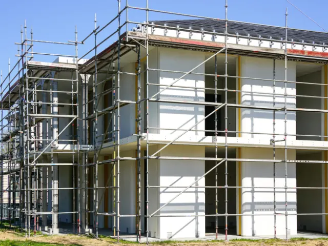

In deze wijken in Nijmegen vind je prachtige nieuwbouw
Gepubliceerd op 7 januari 2025

Nijmegen is een stad die leeft. Met haar historische charme en moderne ontwikkelingen heeft de stad iedereen iets te bieden. Nieuwbouwprojecten zorgen voor nog meer mogelijkheden om een fijne plek te vinden. We nemen je mee door een paar wijken die volop in ontwikkeling zijn.
Nijmegen-Noord
Op zoek naar ruimte, groen en moderne woningen? Dan is Nijmegen-Noord echt iets voor jou. Dit stadsdeel is de afgelopen jaren flink gegroeid en trekt vooral jonge gezinnen en professionals aan. De wijk biedt brede straten, ruime gezinswoningen en volop speeltuinen voor de kleintjes.
Benieuwd naar de mogelijkheden voor nieuwbouw Nijmegen? Kijk dan eens naar de nieuwste projecten en ontdek wat er allemaal mogelijk is.
Nijmegen-Oost
Een wijk met karakter, dat is Oost. Hier wonen betekent genieten van de unieke mix tussen oud en nieuw. Terwijl de statige herenhuizen herinneren aan vroegere tijden, zijn er nu ook luxe nieuwbouwprojecten te vinden. Denk aan moderne appartementen met alle gemakken van nu, midden in een buurt met gezellige cafés en groene parken. Ideaal voor wie houdt van een bruisende omgeving.

Lent
Lent, aan de overkant van de Waal, is inmiddels niet meer weg te denken uit Nijmegen. Deze wijk combineert een groene en rustige omgeving met moderne, duurzame woningen. Veel van de nieuwbouwwoningen in Lent zijn energiezuinig en ontworpen met oog voor het milieu. Een ideale keuze als je bewust wilt wonen zonder in te leveren op comfort.
Dukenburg
Betaalbaar wonen en toch profiteren van alles wat Nijmegen te bieden heeft? Dan is Dukenburg een interessante optie. Deze wijk biedt nieuwbouwwoningen die perfect zijn voor starters en jonge gezinnen. Bovendien zijn de verbindingen naar het stadscentrum uitstekend, waardoor je overal snel bent. Een praktische en aantrekkelijke keuze.
Jouw nieuwe thuis in één van de wijken in Nijmegen
Elke wijk in Nijmegen heeft iets unieks te bieden. De ruimte in Noord, de luxe van Oost, het groen in Lent en de betaalbaarheid van Dukenburg maken de stad divers en aantrekkelijk. Neem een kijkje bij de nieuwste projecten en ontdek welke wijk het beste bij jou past. Nijmegen heeft alles in huis voor jouw nieuwe thuis!